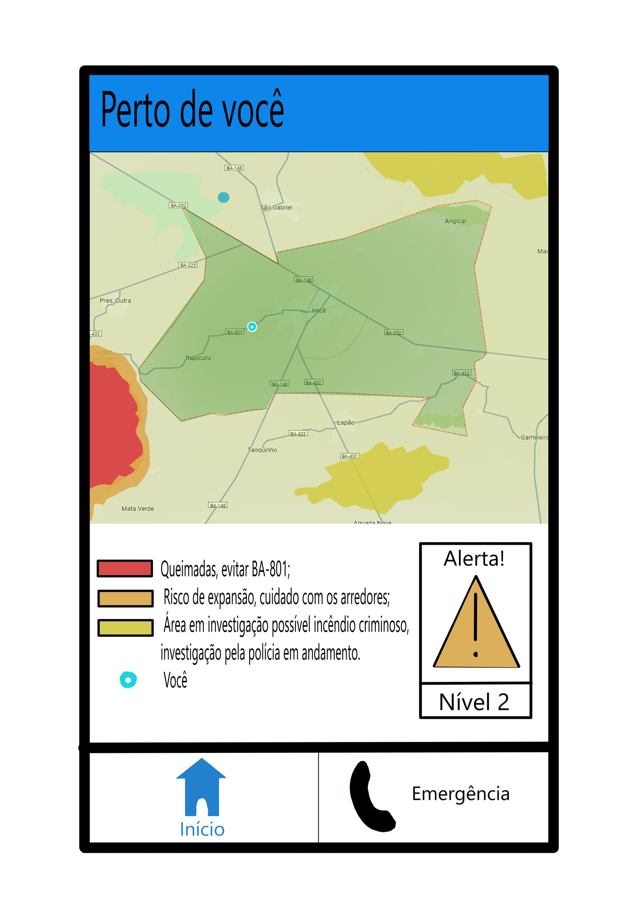
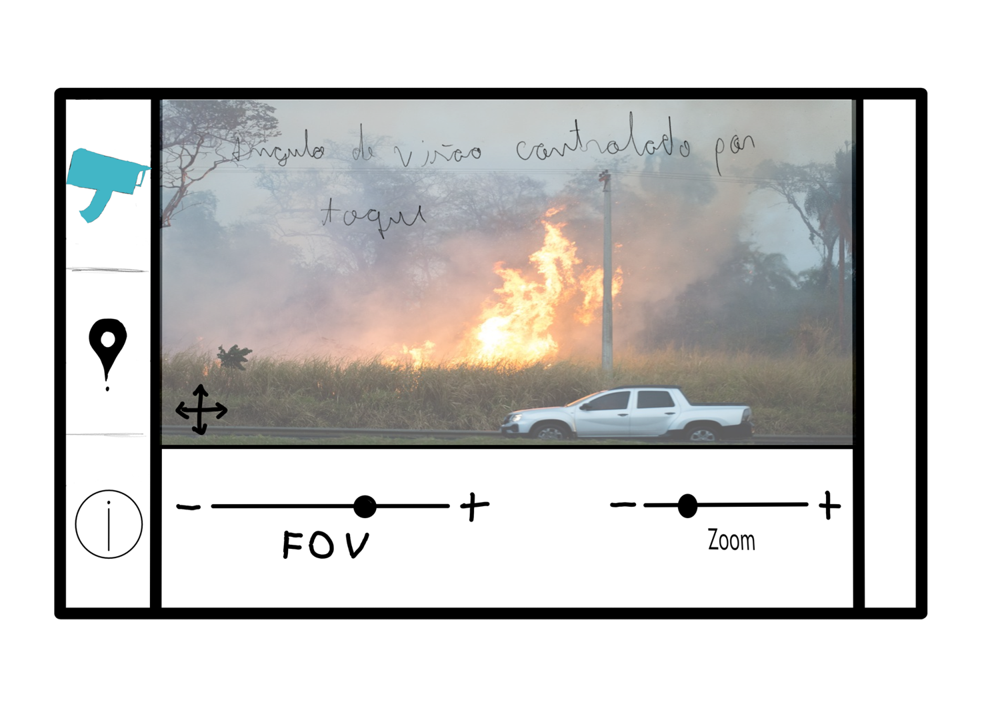
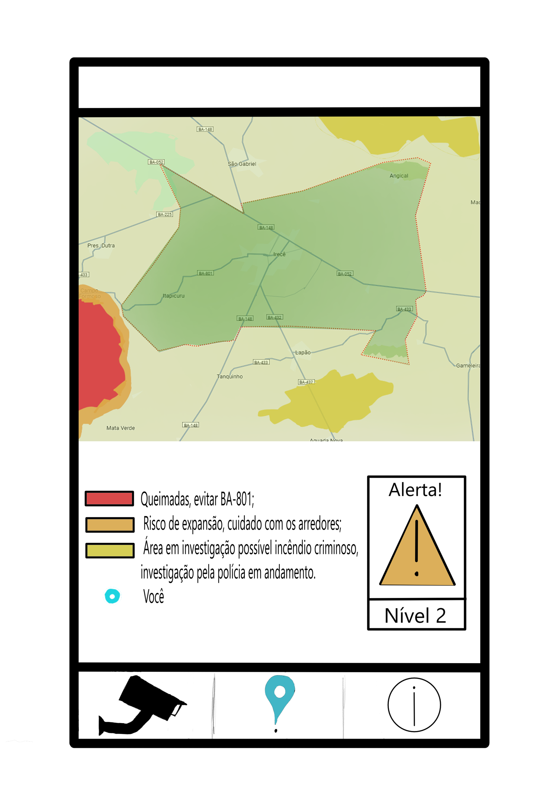
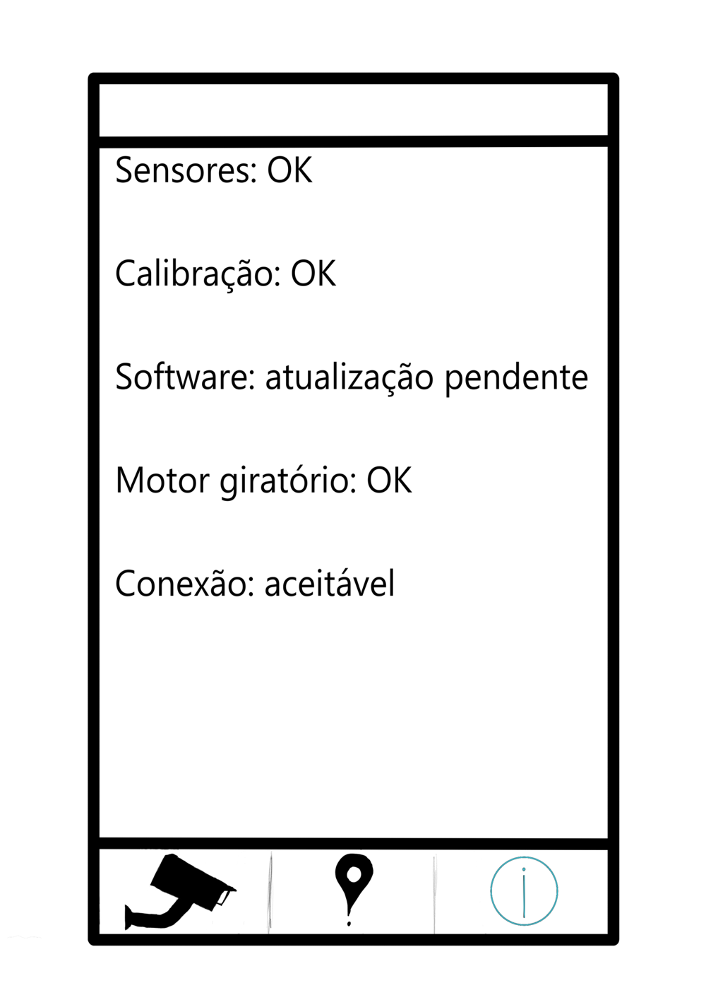

Mapeamento Geográfico e Monitoramento de Incêndios Florestais
Câmera térmica
Trabalhando juntamente com câmeras equipadas de sensores feitas para identificar focos de incendio, temos um aplicativo que seria disponibilizado para todos que alertaria os cidadãos e as autoridades dos focos de calor, evitando que se espalhe e forme um incêndio de larga escala.
Um aplicativo voltado para os cidadãos
Nesse app, assim que aberto os cidadão terão acesso a um mapa perto dele que mostrará a situação de queimadas a seu redor, junto aos níveis de perigo de cada área.
Quando o sistema identifica um foco de incêndio, as coordenadas exatas são enviadas automaticamente para as autoridades competentes, como o Corpo de Bombeiros e a Defesa Civil. O alerta inclui um mapeamento detalhado do local, facilitando uma resposta rápida e eficiente. Os níveis de alerta são:
- Amarelo: Área em possível risco de incêndio criminoso (Nível 1)
- Laranja: Risco de expansão de queimada (Nível 2)
- Vermelho: Área sofrendo queimadas (Nível 3)
Além disso, em caso de incêndio, há um botão de emergência para ligar diretamente para as autoridades locais.
Um aplicativo voltado para as autoridades
Já para as autoridades teríamos um app mais completo, com a visão das câmeras de seu setor; uma ferramenta de diagnóstico para saber se o dispositivo está com defeito e seu status de conexão, e, da mesma forma que o app dos cidadãos, um mapa com as áreas afetadas.
No menu câmera, representado em azul na parte inferior é possível acessar câmeras conectadas e disponíveis, permitindo zoom, alteração do campo de visão (FOV) e controle da direção da câmera.
Essa parte do mapa é muito parecida com a que os cidadãos tem acesso. O sistema permite aos usuários definir e monitorar áreas específicas de interesse dentro do mapa. Isso é principalmente útil para propriedades privadas, reservas florestais ou áreas agrícolas, garantindo que qualquer atividade suspeita seja detectada imediatamente.
Na aba de diagnóstico, representada pelo ícone de informação, será abordado a situação do hardware e software da câmera, como sensores, motores que controlam a movimentação, a calibração de sensores específicos, além do estado de conexão.
Conclusão
O uso de tecnologias avançadas para o mapeamento geográfico e monitoramento de incêndios florestais representa um grande avanço na preservação ambiental. Com a combinação de câmeras térmicas, termográficas e híbridas, juntamente com um sistema de alerta eficiente e personalizável, torna-se possível detectar e responder de forma rápida a focos de incêndio, minimizando danos e protegendo áreas vulneráveis. A capacidade de monitorar e prever riscos, bem como identificar causas de incêndios criminosos, proporciona um controle mais rigoroso e uma ação mais eficaz das autoridades competentes. Dessa forma, esta ferramenta se mostra indispensável na luta contra os incêndios florestais, promovendo uma gestão ambiental mais inteligente e proativa.